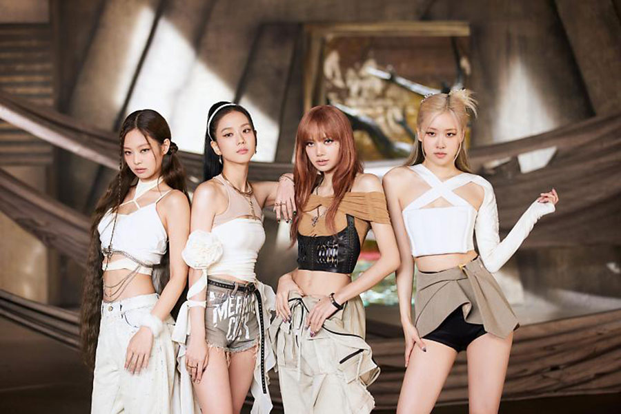
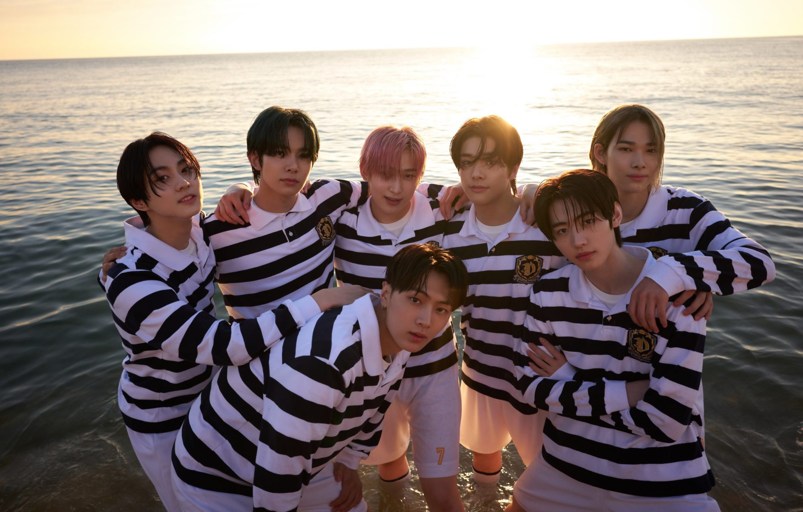
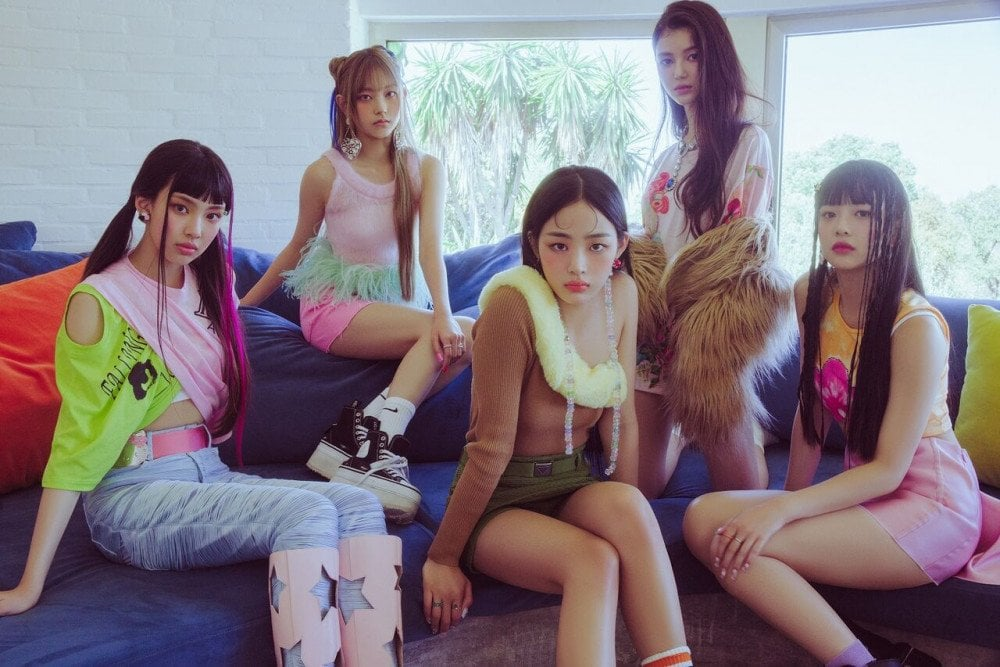
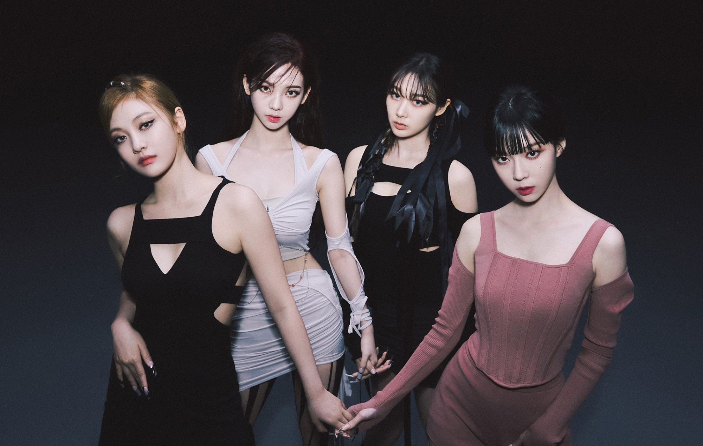
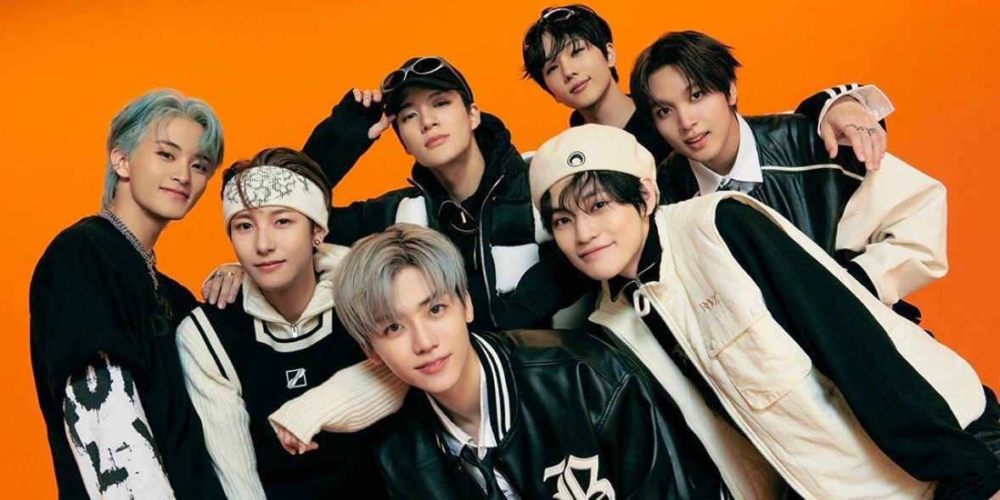
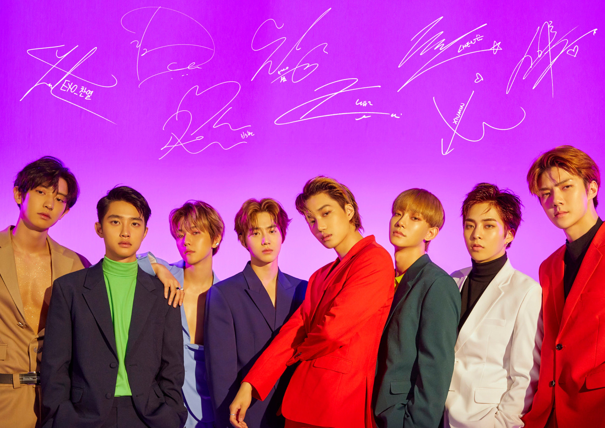
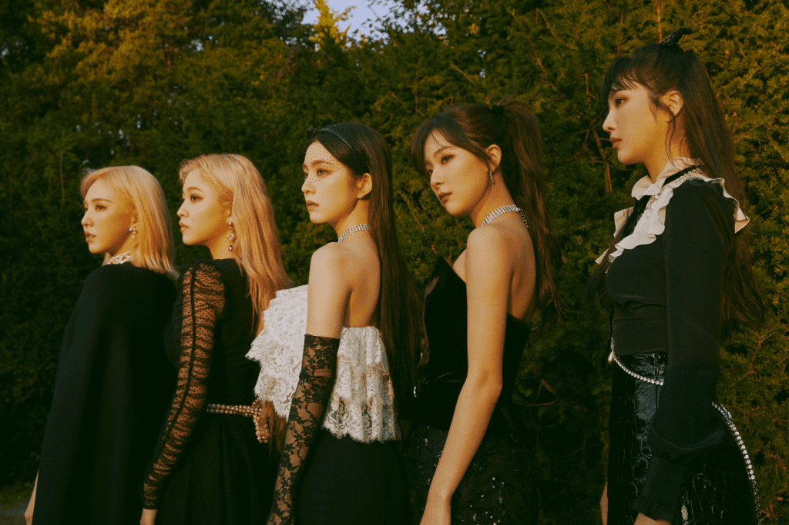
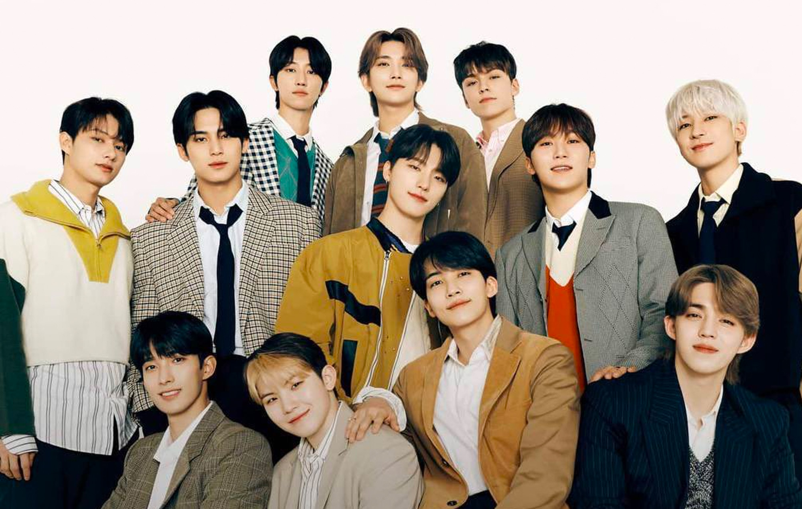

The Korean Wave could be rapidly spread by the participation of its fans in the world, and social network service became a common communication medium of the fans. The genre combines such Western pop music elements as hip-hop and rock with Korean traditions, and frequently involves dance routines and singing in Korean lyrics intermixed with some English. K-pop is especially performed by idolized boy bands and girl groups.

BLACKPINK
Blackpink (Hangul: 블랙핑크), stylized as BLACKPINK or BLΛƆKPIИK, is a South Korean girl group formed by YG Entertainment and the first girl group to debut under the same entertainment company seven years after 2NE1. The group consists of four members: Jennie, Lisa, Jisoo, and Rosé.he group debuted in August 2016 with their single album Square One, which featured "Whistle" and "Boombayah", their first number-one entries on South Korea's Gaon Digital Chart and the US Billboard World Digital Song Sales chart, respectively.

ENHYPEN
Enhypen is a South Korean boy band formed by Belift Lab, a joint venture between CJ ENM and Hybe Corporation,through the 2020 survival competition show I-Land. The group is composed of seven members: Heeseung, Jay, Jake, Sunghoon, Sunoo, Jungwon, and Ni-ki. They debuted on November 30, 2020, with the extended play Border: Day One.The group's name, Enhypen, was introduced during the live broadcast of the final episode of I-Land. Etymologically, Enhypen derives its name from the hyphen symbol (-), representing "Connection, Discovery, & Growth". Similar to how a hyphen connects different words to create new meanings, Enhypen aims "to come together to connect, discover and grow together to form a new act".

NEWJEANS
NewJeans (Korean: 뉴진스; RR: Nyujinseu) is a South Korean girl group formed by ADOR. The group is composed of five members: Minji, Hanni, Danielle, Haerin, and Hyein. They debuted in July 2022 with the single "Attention", followed shortly afterwards by two other singles, "Hype Boy" and "Cookie". The singles were all featured on their eponymous debut extended play, released in August 2022. In 2023, they released their first single album OMG to commercial success. It was accompanied by two singles, "Ditto" and "OMG".
BTS
BTS , also known as the Bangtan Boys, is a South Korean boy band formed in 2010. The band consists of Jin, Suga, J-Hope, RM, Jimin, V, and Jungkook, who co-write or co-produce much of their material. Originally a hip hop group, their musical style has evolved to incorporate a wide range of genres, while their lyrics have focused on subjects including mental health, the troubles of school-age youth and coming of age, loss, the journey towards self-love, individualism, and the consequences of fame and recognition. Their discography and adjacent work has also referenced literature, philosophy and psychological concepts, and includes an alternate universe storyline.

AESPA
Aespa is a South Korean girl group formed by SM Entertainment. The group consists of four members: Karina, Giselle, Winter, and Ningning. They debuted on November 17, 2020, with the single "Black Mamba".Their name comes from combining ‘æ’ derived from ‘Avatar X Experience’ & ‘aspect’. The meaning behind the name is various innovative activities to come with the theme of ‘Experiencing a new world via the encounter of the ‘avatar’, your other self’.

NCT DREAM
NCT Dream (Korean: 엔시티 드림) is the third sub-unit of the South Korean boy band NCT, formed by SM Entertainment in 2016. They were initially intended to be the teenaged unit of NCT with an admission-and-graduation system, in which members would leave after reaching age of majority (20 in Korean age reckoning, 19 internationally), prior to re-branding in 2020. The sub-unit debuted on August 25, 2016, with the single "Chewing Gum" and a lineup of seven members—Mark, Renjun, Jeno, Haechan, Jaemin, Chenle, and Jisung—whose average age was 15.6 years old. In late 2018, the group's leader Mark graduated from NCT Dream but returned in 2020 when began promoting as a fixed seven-member group.

ITZY
Itzy is a South Korean girl group formed by JYP Entertainment and consisting of members Yeji, Lia, Ryujin, Chaeryeong, and Yuna. They debuted on February 12, 2019, with the release of their single album It'z Different. Their accolades include Rookie of the Year at the 34th Golden Disc Awards, New Artist of the Year at the 9th Gaon Chart Music Awards and 2019 Melon Music Awards, Best New Female Artist at the 2019 Mnet Asian Music Awards, and the New Artist Award at the 29th Seoul Music Awards; they are the first K-pop girl group to achieve such a "Rookie Grand Slam".

EXO
Exo (Korean: 엑소) is a South Korean-Chinese boy band based in Seoul formed by SM Entertainment in 2011 and debuted in 2012. The group consists of nine members: Xiumin, Suho, Lay, Baekhyun, Chen, Chanyeol, D.O., Kai and Sehun. They are noted for releasing music and performing extensively in Korean, Mandarin and Japanese. Before SM Entertainment dabbled into the concept of the SM Culture Universe, EXO debuted as powerful beings from this so-called exoplanet. And powerful they are, indeed, as one simply cannot talk about K-pop without ever mentioning these extraterrestrial creatures. From 2012 until now, we’ve seen how these boys grew from rookies to kings.

RED VELVET
Red Velvet (Korean: 레드벨벳; romanized: Redeubelbet; Japanese: レッドベルベット; romanized: Reddoberubetto) is a South Korean girl group formed and managed by SM Entertainment. They originally debuted on August 1, 2014, with the single "Happiness" with the four-member line-up of Irene, Seulgi, Wendy and Joy. A fifth member, Yeri, joined in March 2015, following the release of their first extended play, Ice Cream Cake. Sonically, the music of Red Velvet reflects their group name: their predominantly-pop "red" side experiments occasionally with electronic and funk, while their "velvet" side focuses on '90s-influenced R&B with elements of ballad and hip hop. Their genre versatility and catchy hooks have garnered critical praise.

SEVENTEEN
Seventeen is a South Korean boy band formed by Pledis Entertainment. The group consists of thirteen members: S.Coups, Jeonghan, Joshua, Jun, Hoshi, Wonwoo, Woozi, DK, Mingyu, The8, Seungkwan, Vernon, and Dino. Seventeen is considered a "self-producing" idol group, with the members actively involved in songwriting and choreographing, among other aspects of their music and performances. They perform as one group and are divided into three units—hip-hop, vocal, and performance—each with a different area of specialization. They have been labeled "Performance Kings", "Theater Kids of K-Pop", and "K-Pop Performance Powerhouse'" by various domestic and international media outlets.
|